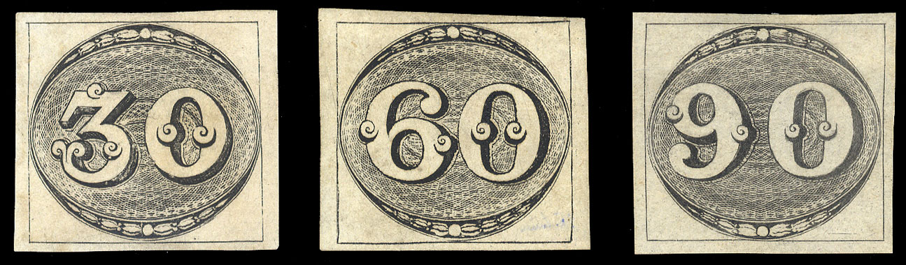
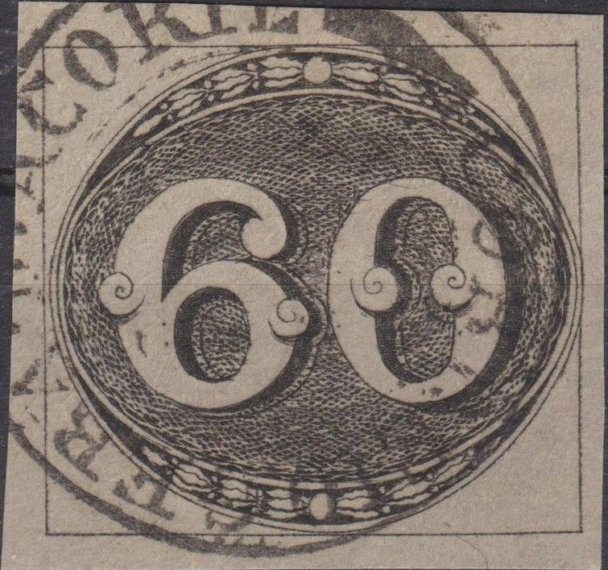
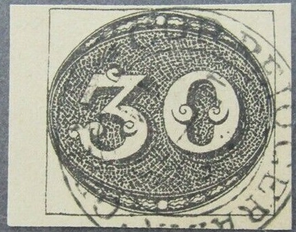
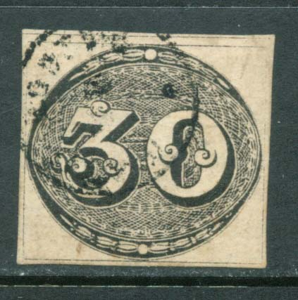
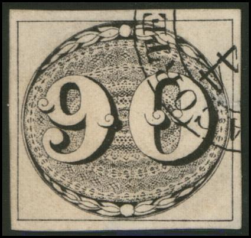

{kind=link}

This is a Mercier forgery of the 90 r value, I have no further information
Return To Catalogue - Brazil 1843 issue - Brazil 1843 issue, forgeries part 1
Note: on my website many of the
pictures can not be seen! They are of course present in the
catalogue;
contact me if you want to purchase it.

Genuine stamps
Forgeries:
Forgeries of these stamps exist. There are 17 different kinds of forgeries known. Very old forgeries were made by Spiro in 1864, Zechmeyer made 3 different forgeries in 1890, followed by Erasmus Oneglia in 1897 and Giovani Patroni, also in 1897. In the 20th century forgeries were made by M.Mercier in 1910 (Mercier is the predecessor of the famous forger Fournier) and Jean de Sperati in 1914 (only the 60 r and 90 r). I'm not sure if the above date '1910' for Mercier is correct, since he went bankrupt in 1904 (source: Tyler, 'Philatelic Forgers, Their Lives and Works'). The other forgeries are of unkown makers (Source: http://www.firstissues.org/ficc/details/brazil_1.shtml). More information is also available at: http://www.philatoforge.co.uk/index.html.
In most forgeries the network of lines of the background is different from the genuine stamps. Examples:
Mercier forgery (or Oneglia?):
This is a Mercier forgery of the 90 r value, I have no further
information


 
Mercier forgeries. They were printed in minisheets of 3
containing each value.
These forgeries were printed in strips of three containing all
three values (taken from a document entitled 'BRAZIL - EARLY
FORGERIES, FACSIMILES & POSTAL COUNTERFEITS', see:
https://classic.stamps.org/userfiles/file/MyAPS/Exhibits/Brazil.pdf,
where by the way this forgery type is indicated as Mercier
forgeries).
On https://classiclatinamerica.com/wp-content/uploads/2021/01/Brazil-Forgeries_compressed_compressed.pdf these forgeries are said to be made by Mercier. I don't think this is correct. The book 'The Oneglia Engraved Forgeries by Robson Lowe & Carl Walske (1996, 104 pages)' appears to show these forgeries as being made by Oneglia. Further proof is that that 1889 journal stamps forgeries (and the 1898 overprints) have the same "GERALDACORTE" cancel and are also listed in the 1906 Oneglia pricelist.
Fournier forgeries:

A forged Fournier cancel as can be found in 'The Fournier Album
of Philatelic Forgeries', "CORREIO GERADACORTE 12(?) 18(?) 8
44" possibly used on forgeries of this issue. Note that
there is no "L" in "GERADACORTE" (it should
be "GERALDACORTE").

This forgery appears to have the above forged cancel

This forgery also has the above forged Fournier cancel.
Note that the 'nobs' on the "60" are not well done when
compared to a genuine stamp. This forgery appears to have been
based on an illustration from Le Timbre Poste by Moens of March 1867, No.51, page 22. The
catalogue of Placido Ramon de Torres
"Album Illustrado para Sellos de Correo" of 1879 also
has the same image (information passed to me thanks to Gerhard
Lang, 2016) on page 168.
Other forgeries:

 
Forgery of the 30 r value. There is an extra line in the upper
left part of the "3". It appears with a
typical 'VF' cancel that can be found on forgeries of many
other countries (note that there is another forgery type of
Brazil's first issue with the VF cancel as well!)


Two forgeries made by the same forger (see the upper pearl for
example).

Another forgery of the 60 r value.
Sperati forgeries (60 r and 90 r only):
60 r:

Image obtained from:
http://www.seymourfamily.com/rfrajola/Sperati/speratiindex.htm

(Probably a Sperati forgery)


This forgery is made by photo-lithography, while the genuine stamps are engraved. The cancels always seem to be one of the following: 'PELOTAS' or 'Victoria' in a straight line, 'MACEIO' in a framed rectangular box, or 'CORREIO GERALDACORTE' in a double circle, with dates either '30/8 1844', '4/9 1844', '14/9 1844', '6/3 1845' or '28/7 1845'. The dates apparantly are always one of the above. See pictures below for examples.
Cancels used by Sperati, reduced sizes; note that the cancel
'14/9 1844' is missing
Sperati forgery of the 90 r value with applied cancel (reduced
sizes)
The distinguishing characterisitc for the 60 r Sperati forgery,
indicated with an arrow.

Front and backside of a Sperati forgery of the 60 c value with a
red "VICTORIA" cancel; I've also seen the 60 c Sperati
forgery with a black "VICTORIA" cancel.
90 r:
Sperati forgery of the 90 r value
Some kind of modern(?) replicas.
Others:

Two identical forgeries with the cancel at exactly the same
place.
Other stamp that I do not trust
{kind=link}
{kind=link}
{kind=link}
{kind=link}